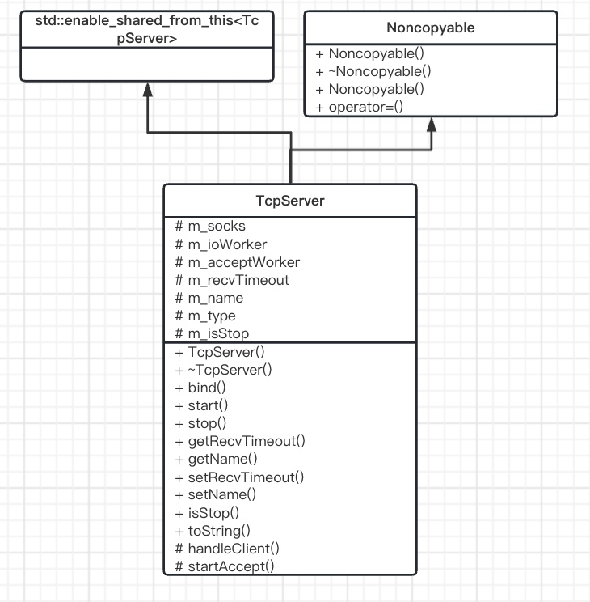

TcpServer模块
基于Socket类，封装了一个通用的TcpServer的服务器类，提供简单的API，使用便捷。

1. 模块设计
TcpServer类支持同时绑定多个地址进行监听，只需要在绑定时传入地址数组即可。TcpServer还可以分别指定接收客户端和处理客户端的协程调度器。
比较好的TcpServer可以快速绑定一个或多个地址，启动服务，监听端口，accept连接，处理socket连接等功能。具体业务功能更的服务器实现，只需要继承该类就可以快速实现.
2. 模块实现
2.1 TcpServer
TCP服务器封装
class TcpServer : public std::enable_shared_from_this<TcpServer>
, Noncopyable {
public:
typedef std::shared_ptr<TcpServer> ptr;
...
protected:
/// 监听Socket数组
std::vector<Socket::ptr> m_socks;
/// 新连接的Socket工作的调度器
IOManager* m_ioWorker;
/// 服务器Socket接收连接的调度器
IOManager* m_acceptWorker;
/// 接收超时时间(毫秒)
uint64_t m_recvTimeout;
/// 服务器名称
std::string m_name;
/// 服务器类型
std::string m_type;
/// 服务是否停止
bool m_isStop;
};
3. Usage
通过自定义TcpServer，并且重载HandleClient方法即可。
class MyTcpServer : public jujimeizuo::TcpServer {
protected:
virtual void handleClient(jujimeizuo::Socket::ptr client) override;
};
void MyTcpServer::handleClient(jujimeizuo::Socket::ptr client) {
JUJIMEIZUO_LOG_INFO(g_logger) << "new client: " << client->toString();
static std::string buf;
buf.resize(4096);
client->recv(&buf[0], buf.length()); // 这里有读超时，由tcp_server.read_timeout配置项进行配置，默认120秒
JUJIMEIZUO_LOG_INFO(g_logger) << "recv: " << buf;
client->close();
}
4. 总结
TcpServer类采用了Template Pattern设计模式，它的HandleClient是交由继承类来实现的。使用TcpServer时，必须从TcpServer派生一个新类，并重新实现子类的handleClient操作。